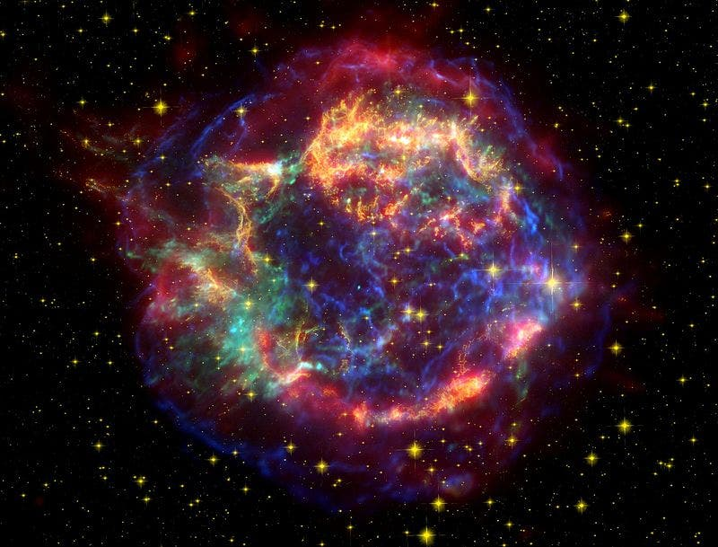
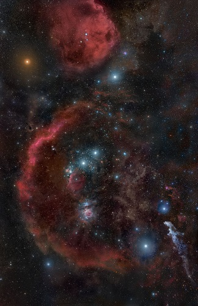

Las estrellas
Son los elementos constitutivos más destacados de las galaxias. Las estrellas son enormes esferas de gas que brillan debido a sus gigantescas reacciones nucleares. Cuando debido a la fuerza gravitatoria, la presión y a la temperatura del interior de una estrella que sea suficientemente intensa, se inicia la fusión nuclear de sus átomos, y comienzan a emitir una luz roja oscura, que después se mueve hacia el estado superior, que es en el que está nuestro Sol, para posteriormente, al modificarse las reacciones nucleares interiores, dilatarse y finalmente enfriarse.
Al acabarse el hidrógeno, se originan reacciones nucleares de elementos más pesados, más energéticas, que convierten la estrella en una gigante roja. Con el tiempo, esta se vuelve inestable, a la vez que lanza hacia el espacio exterior la mayor parte del material estelar. Este proceso puede durar 100 millones de años, hasta que se agota toda la energía nuclear, y la estrella se contrae por efecto de la gravedad hasta hacerse pequeña y densa, en la forma de enana blanca, azul o marrón. Si la estrella inicial es varias veces más masiva que el Sol, su ciclo puede ser diferente, y en lugar de una gigante, puede convertirse en un supergigante y acabar su vida con una explosión denominada supernova. Estas estrellas pueden acabar como estrellas de neutrones. Tamaños aún mayores de estrellas pueden consumir todo su combustible muy rápidamente, transformándose en una entidad supermasiva llamada agujero negro.
Los púlsares son fuentes de ondas de radio que emiten con periodos regulares. La palabra «púlsar» significa pulsating radio source (fuente de radio pulsante). Se detectan mediante radiotelescopios y se requieren relojes de extraordinaria precisión para detectar sus cambios de ritmo. Los estudios indican que un púlsar es una estrella de neutrones pequeña que gira a gran velocidad. El más conocido está en la Nebulosa del Cangrejo. Su densidad es tan grande que una muestra de cuásar del tamaño de una bola de bolígrafo tendría una masa de cerca de 100 000 toneladas. Su campo magnético, muy intenso, se concentra en un espacio reducido. Esto lo acelera y lo hace emitir gran cantidad de energía en haces de radiación que aquí recibimos como ondas de radio.
Constelaciones
Son grupos de estrellas visibles desde la Tierra, que forman patrones imaginarios según la perspectiva humana. La Unión Astronómica Internacional (UAI, por las siglas en inglés de International Astronomical Union) define a las constelaciones por sus límites o bordes y no por patrones o formas, así que pueden identificarse por medio de coordenadas en el cielo y no simplemente por tener una forma distintiva.
Una constelación, en astronomía, es una agrupación convencional de estrellas, cuya posición en el cielo nocturno es aparentemente invariable. Los pueblos, generalmente de civilizaciones antiguas, decidieron vincularlas mediante trazos imaginarios, creando así siluetas virtuales sobre la esfera celeste. En la inmensidad del espacio, en cambio, las estrellas de una constelación no necesariamente están localmente asociadas; y pueden encontrarse a cientos de años luz unas de otras. Además, dichos grupos son completamente arbitrarios, ya que distintas culturas han ideado constelaciones diferentes, incluso vinculando las mismas estrellas.
Algunas constelaciones fueron ideadas hace muchos siglos por los pueblos que habitaban las regiones del Medio Oriente y el Mediterráneo. Otras, las que están más al sur, recibieron su nombre de los europeos en tiempos más recientes al explorar estos lugares hasta entonces desconocidos por ellos, aunque los pueblos que habitaban las regiones australes ya habían nombrado sus propias constelaciones de acuerdo a sus creencias. Por ejemplo, suele llamarse “constelación” a El carro o Cazo, grupo de 7 estrellas que parece tener la forma de dichos objetos, pero que en realidad forma parte de la constelación Osa Mayor. Estos conjuntos de estrellas, fácilmente identificables al tener una forma similar a la de objetos, animales, etcétera, se denominan asterismos y son parte de constelaciones.